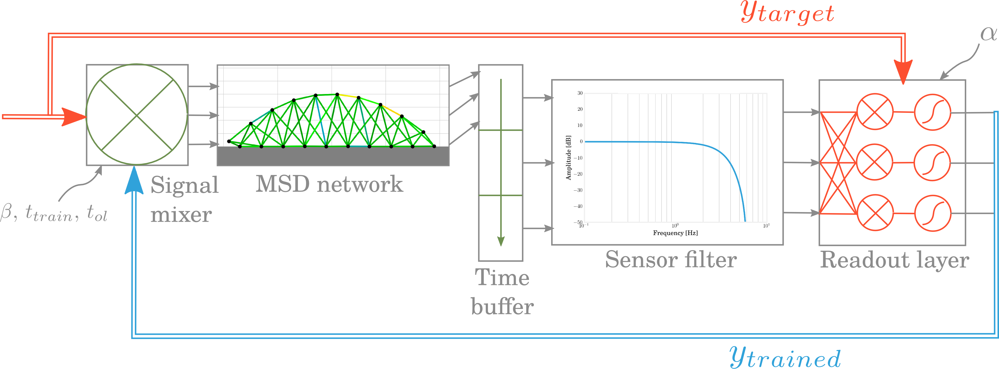

Robotic Embodiment
The combination of brain inspired AI and robotics is in the core of our work in the Human Brain Project. AI is a vague concept that originated from computer sciences many decades ago and encompasses all algorithms that mimic some cognitive functions of the human species. They are increasingly based on methods that learn automatically from big datasets.
However, applying those methods to control robots is not as straightforward as it could seem. Unlike computer software, robots generally evolve in noisy and continuously changing environments but on the other hand, their mechanical complexity can be seen as an asset to simplify the control. This is studied through the fields of embodiment and morphological computation. Extreme examples have shown that mechanical structures could provide very natural behaviour with no controller at all.
Towards a Formalization of the Concept
Some recent investigations have tried to formalize the relation between the dynamical complexity of a mechanical system and its capability to require simple control. To this goal, a simple yet efficient tool consists in simulating structures composed of masses connected with actuated damper-spring links.
To extend this research, we developed a basic simulator of mass-spring-damper (MSD) networks and optimized a naive locomotion controller to provide them with efficient gaits in term of traveled distance and dissipated power. Three experiments have been done in open-loop to determinate the influence of the size of a structure (estimated though the number of nodes), the compliance (inverse of the spring stiffness) and the saturation at high powers.
In the second part of this work, the capacity of realizing closed-loop control in a very simple way requiring very few numerical computations has then been demonstrated.
 The principal components in the closed-loop learning pipeline consist in a readout layer which is trained at each time step and a signal mixer that gradually integrates the feedback in the actuation signal.Our Contribution
A full discussion about the results is accessible directly in this article under Creative Common license.
This work has been realized at Ghent University together with Jonas Degrave, Francis wyffels, Joni Dambre and Benonie Carette. It is mainly academic and provides a methodology to optimize a controller for locomotion and indications on what we can expect from its complexity to be able to realize this experiment. In the future, this knowledge will be used to conduct similar experiments on quadruped robots both in the real world and in simulation using the Neuro-Robotic Platform (NRP) developed in HBP.